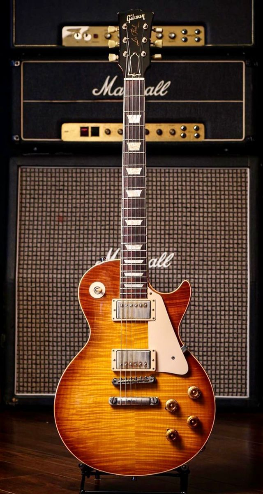

A Riff Sisters nasceu do sonho de quatro amigas apaixonadas por música. Unidas desde a adolescência por ensaios improvisados, tardes ouvindo vinis e conversas sobre timbres e solos, elas compartilhavam não só a amizade, mas também o desejo de criar um espaço onde os instrumentos fossem tratados com respeito, memória e emoção. Tudo começou com as histórias do avô de uma delas, que tocava violão e falava com carinho de suas guitarras antigas — cada uma com uma trajetória única. Aqueles relatos despertaram nelas a vontade de montar uma loja que fosse mais do que comércio: um lugar onde cada instrumento tivesse voz, passado e propósito. Na Riff Sisters, convivem dois mundos: De um lado, as guitarras novas, reluzentes, prontas para ganhar vida nas mãos de quem está começando ou busca um novo som. Do outro, as guitarras antigas, cada uma com sua história registrada algumas já embalaram noites em bares da cidade, outras vibraram em bandas de garagem e até brilharam em grandes palcos. A loja é um refúgio para quem acredita que música é feita de alma e lembrança. Quem entra não encontra apenas instrumentos, mas também mergulha nas histórias que eles carregam. Como dizem as fundadoras: “Toda guitarra tem algo a contar. A sua está esperando por você.”
